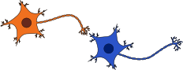
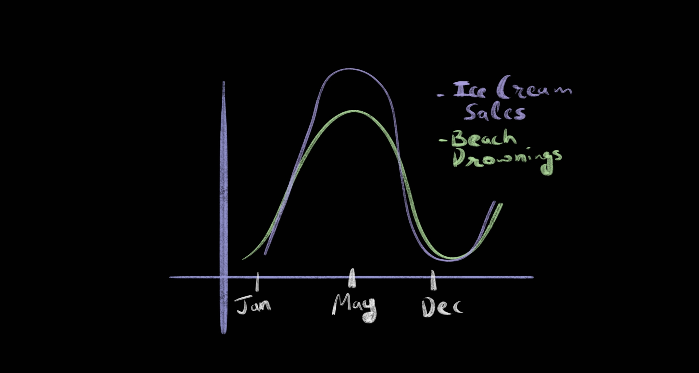

The Neural Basis of Learning#
Synapses - Connections that define us#
We have billions of neurons in a single brain, and many of them are connected to each other like such:

Image by Dana Scarinci Zabaleta, Wikimedia Commons
Information flows from the orange to the blue neuron (axon of the sender to dendrite of the receiver). If you notice, the axon of the orange neuron connects to the dendrite of the blue one. This connection (the space between the axon ends and dendrite begins) is called a synapse. For every neuron in the brain there are on average a thousand synapses - meaning we have trillions of synapses in the whole brain. Synapses are widely recognized as the key sites in the brain where learning occurs. As we learn things, synapses change their strengths and configuration - some connections are strengthened, others are formed anew, while some connections are broken entirely. This is why we can learn new things even after adulthood, when neuronal reproduction stops.
The modern neuroscientific study of learning is incomplete without looking at synapses. Therefore, let us try and understand how synapses can change as we learn things.
The Hebbian Principle#
Hebbian learning is a fascinating idea in neuroscience that helps us understand how our brains form connections between neurons. Imagine two neurons, or brain cells, working together to process some information. If the two neurons are very often active at the same time, their connection gets stronger.
Here’s how it works: When you learn something new or practice a skill, like riding a bike, certain neurons in your brain become active. If they become active at the same time, they form stronger connections, like friends who spend a lot of time together. Over time, these connections become better and faster at communicating, helping you remember what you’ve learned.
It’s important to note that each neuron has hundreds to thousands of connections with other neurons. Therefore, the firing of each neuron depends on and influences the firing of many other neurons. In rare cases, the firing of an individual neuron can have a very strong stimulating influence on the firing of another neuron that receives signal from it. Such a situation could lead to synaptic strengthening between these neurons, since they are likely to fire together (i.e. in quick succession) a lot.
Hebbian learning can explain many phenomena related to learning, such as pattern recognition and associative memory.
Associative Learning#
Predicting Associations in the World#
It turns out that the process of learning many of the important skills in life has one thing in common: the ability to make predictions. For example, every time you make or buy food, you make a prediction about how much you are likely to eat based on how hungry you are, and your own understanding of your appetite. The better your prediction, the less likely you are to feel unsatisfied or waste food at the end of your meal. You might have refrained from making light-hearted fun of a friend when you knew that they were having a bad day. Here again, you made a prediction - this time you predicted how your friend would react based on what you could say to them.
Psychologists have been studying how we predict things for a very long time, and one of the building blocks of our ability to make predictions is called “associative learning”. “Associative learning” refers to the ability of organisms to learn to predict relationships between events or entities in their environment from prior experience.
A simple kind of association one might learn through experience takes the following form: If event A happens, event B will also happen.
For example you may have learned from experience that when you stay hungry for too long, you are also more likely to be irritable and frustrated. Can you think of any such associations you may have learned from your experience?
Discussion - Correlations in the Wild#
A social scientist walks up to a mic in a public talk and says, “Our data suggests that people who actively use social networking sites have more friends than people who don’t. Therefore we conclude that using social media helps build and nurture friendships and real-life connections with people.”
Is this person justified in their inference?
Let’s try one more. The plot below shows how ice-cream sales in a city varied across the year in purple. Plotted also alongside are number of drownings recorded at a particular beach (in different units of course) in the same city. Are people drowning because of all the ice cream?
